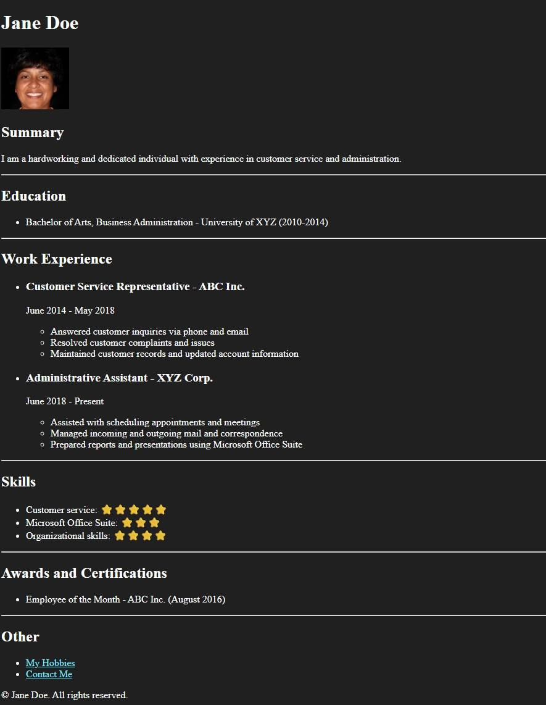

Practice Page
HTML Portfolio Project
This page preserves the original portfolio exercise idea while replacing missing starter links and assets with working local project content.

Return to PortfolioPractice Page
This page preserves the original portfolio exercise idea while replacing missing starter links and assets with working local project content.

Return to Portfolio